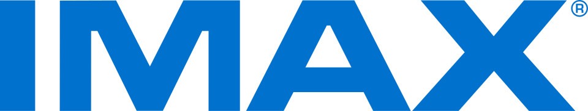

아이맥스 IMAX Corporation
아이맥스(IMAX Corporation)는 IMAX 카메라와 영사 시스템을 설계·제조하고, 필름 현상과 제작, 후반작업, 배급까지 수행하는 캐나다의 극장 기술·제작 기업이다.
최종 업데이트

아이맥스는 어떤 브랜드인가
IMAX는 대형 스크린용 카메라와 영사 시스템을 설계하고 제조하는 캐나다 기업이다. 필름 현상, 제작, 후반작업, 배급도 수행하며 전 세계의 IMAX 계열 극장에 콘텐츠를 공급한다.
본사는 토론토 광역권의 미시소거에 있고, 뉴욕과 로스앤젤레스에도 사업장을 두고 있다. 2025년 11월 기준 90개국에 1,759개의 IMAX 극장이 있었으며, 이 중 1,693개는 상업용 복합상영관에 있었다.
극장 방식에는 IMAX 3D, IMAX Dome, Digital IMAX 등의 변형이 있으며, 2019년 12월에는 81개 국가와 지역에 1,624개 극장이 있었다. 1994년 인수 이후 할리우드 제작사 유치에 주력해 왔으며, 현재 최고경영자는 Richard Gelfond이다.
아이맥스는 어떻게 시작되고 성장했나
1967년 Graeme Ferguson, Roman Kroitor, Robert Kerr 세 영화인이 몬트리올에서 IMAX Corporation을 설립했다. 이 아이디어와 기술은 Expo 67에서 상영된 다중 화면 작품들에서 나왔다.
세 사람은 더 크고 복잡한 프로젝트에 새로운 기술이 필요하다고 판단해 1968년 엔지니어 William Shaw를 찾았다. Shaw는 일반 35mm 화면보다 열 배 큰 영상을 구현하는 영사기를 만들었고, 이 기술로 처음 제작한 영화는 일본 오사카 Expo '70에서 선보인 Tiger Child이다.
1994년에는 투자은행가 Gelfond와 Bradley Wechsler가 차입매수로 회사를 인수해 NASDAQ에 상장했다.
아이맥스의 브랜드 아이덴티티는 무엇인가
대형 스크린과 서라운드 사운드, 가파른 객석을 갖춘 극장 경험을 위해 자체 카메라와 영사 기술을 개발해 온 캐나다 기업이다.
아이맥스의 대표 제품과 서비스는 무엇인가
주력 사업은 IMAX 카메라와 영사 시스템의 설계·제조, 그리고 IMAX 계열 극장용 필름의 현상·제작·후반작업·배급이다. 할리우드 영화를 위해 개발한 IMAX DMR(Digital Re-Mastering)은 다양한 장소에 빠르게 적용할 수 있는 기술이다.
이후 IMAX Experience와 IMAX MPX 극장 시스템이 나왔고, 기존 2D 영상을 IMAX 3D로 변환하는 작업도 이뤄졌다. 2016년 11월에는 Marvel Television과 실사 TV 시리즈 Marvel's Inhumans를 발표했고, IMAX는 처음으로 재정 파트너를 맡았다.
2022년 9월에는 스트리밍 기술 회사 Ssimwave를 인수했다.
아이맥스는 지금 어떤 상태인가
2025년 11월 기준 90개국에 1,759개의 극장을 두고 있다. 2009년 4월 Gelfond가 단독 CEO가 되었고 Wechsler는 이사회 의장을 맡았다.
2015년 10월 8일에는 자회사 IMAX China가 홍콩 증권거래소에 상장되었다. 2011년 3월 중국의 Wanda Cinema Line이 75개 극장 계약을 발표했고, 2012년에는 중국 톈진에 첫 극장을 열었다.
아이맥스 로고는 어떻게 변해왔나
자주 묻는 질문
아이맥스는 어느 나라 브랜드인가요?
아이맥스는 캐나다의 미디어·엔터테인먼트 브랜드입니다.
아이맥스는 언제 설립되었나요?
아이맥스는 1968년 설립되었습니다.
아이맥스의 브랜드 아이덴티티는 무엇인가요?
대형 스크린과 서라운드 사운드, 가파른 객석을 갖춘 극장 경험을 위해 자체 카메라와 영사 기술을 개발해 온 캐나다
아이맥스의 대표 제품은 무엇인가요?
주력 사업은 IMAX 카메라와 영사 시스템의 설계·제조, 그리고 IMAX 계열 극장용 필름의 현상·제작·후반작업·배급이다.
아이맥스는 현재 어떤 상태인가요?
2025년 11월 기준 90개국에 1,759개의 극장을 두고 있다.
아이맥스의 창업자는 누구인가요?
아이맥스의 창업자는 Roman Kroitor, Graeme Ferguson, Robert Kerr입니다(위키데이터 기준).
아이맥스의 본사는 어디에 있나요?
아이맥스의 본사는 미시소거에 있습니다(위키데이터 기준).
출처와 검증
아이맥스 관련 참고: 공식 웹사이트 · 위키데이터 Q1654103 · 한국어 위키백과 · 영어 위키백과. 브랜드명은 한글과 원어를 함께 표기하되 데이터에 없는 표기는 만들지 않습니다. 기원 국가·설립연도는 검수된 정의문에서 확인된 값을 우선하고, 없을 때만 공식 웹사이트 URL이 일치하는 위키데이터 개체의 값을 씁니다. 위키데이터 값은 2026-11-14 기준입니다.